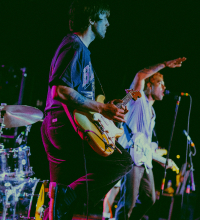
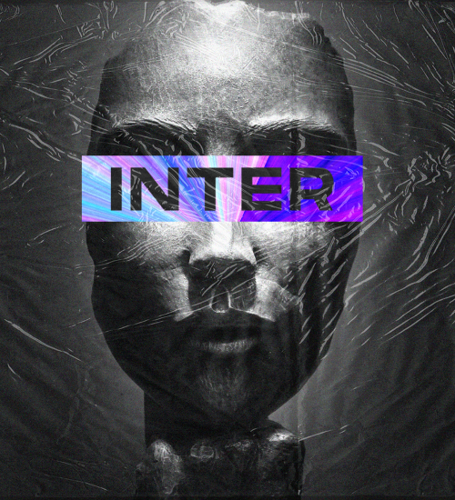
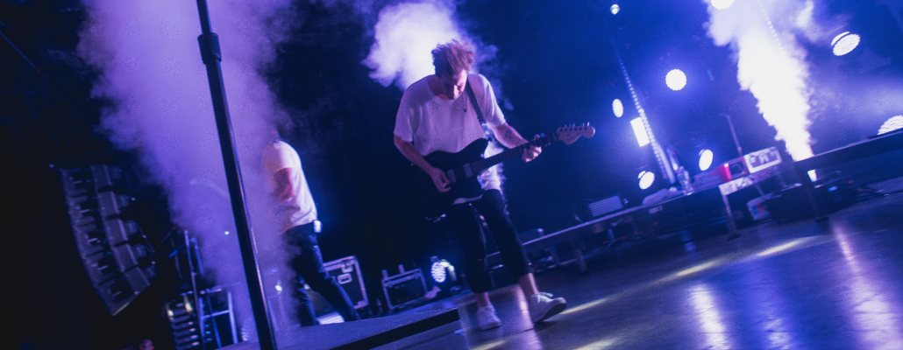

UTOPIA - молодая музыкальная группа из Твери,
покорившая сердца поколения Z. В нашем творчестве
мы смешиваем электронную музыку и душевные тексты.
Популярность пришла к нам с выходом клипа
«Философия» на YouTube, а теперь каждый наш сингл
занимает топовые позиции в чартах.

Новосибирск 15|01|2020
АЛЬБОМЫ

ТРЕКИ
01 Inter
Как правильно - никто не знает,
Все только могут говорить:
Ты это делай, это нет,
Ты будь таким, не будь таким.
Хочешь вершины покорить?
Забудь, останешься один
Но кто бы что ни говорил и что ни думал,
Все равно.
Идем по своему пути,
Больше не надо ничего
Сердца наружу, вокруг хаос,
Но слишком поздно менять что то.
Мечта так близко, и остались лишь секунды
До конца отсчета.
02 Утопия
03 Танцуем
04 Жизнь
UTOPIA рассказывает о своем пути, первом
альбоме, как меняет известность, и дает
советы начинающим музыкантам

«UTOPIA», Москва, 2020 год

руппа UTOPIA сейчас у всех на устах, альбомы
на вершине всех чартов, а клипы набирают
миллионы просмотров. Но так было не всегда.
Саша и Женя, простые парни из Твери, рассказывают,
как они пришли к славе, как их заметили, что дает
слава, и как пробиться начинающим музыкантам.
А о музыкальной карьере были мысли? Мечтали стать
знаменитыми?
О музыкальной карьере и не думали, просто по вечерам
собирались с друзьями и пели песни. Потихоньку стали
и сами придумывать тексты и музыку. Так появились
наши первые «хиты», среди близкого круга, конечно.
А затем и пришла идея записать все наше творчество,
сохранить, а может и показать кому то.
Ребята, расскажите, как вы познакомились, как
возникла идея записать альбом и с чего вы начинали?
Мы дружим с детства, познакомились в музыкальной
школе лет в 7-8, кажется. Учились играть на гитаре,
кстати. Учились мы плохо (смеется), но видимо что то
осталось в памяти. В школе вызывались устраивать
концерты, праздники, пели песни, танцевали, нам
нравилось собирать публику, срывать аплодисменты.
Мы сняли простенький клип на трек «INTER», выложили
на YouTube. К удивлению, клип набрал сотни тысяч
просмотров, с нами связался известный продюссер
и предложил свои услуги. С этого все и началось.

Поддерживали ли вас близкие? Изменилось окружение
с приходом славы?
Близкие верили в нас больше, чем мы сами. Всегда помогают,
поддерживают. Друзья дают советы, как сделать лучше, часто
приходят на концерты, некоторые даже ездят с нами в туры
по России. Окружение в целом не изменилось, близкие друзья
остались с нами, и мы это очень ценим. Конечно, появилось
много знакомств, со знаменитостями, новыми интересными
людьми. Но звездная болезнь обошла нас стороной, мы до сих
пор воспринимаем все это как сон, не можем поверить, что это
происходит с нами. Наслаждаемся каждым днем! У нас с близкими
есть свои традиции, связанные с нашей работой. Если зовут на
мероприятия, идем с мамами, сестрами. Им это интересно, нам нет,
радуются, если увидят знаменитость, для них это настоящий праздник. И нам приятно.
Без подержки близких мы бы не справились, нам очень с ними повезло.
Как вы пишете треки? Чем вдохновляетесь,
как приходят идеи?
Какие у вас планы на дальнейшее развитие? Как скоро
нам ждать вас следующий альбом?
Наши песни простые, основаны на ситуациях их жизни,
которые случаются с каждым. Влюбился или наоборот
расстался с девушкой, все эмоции и чувства выливаются
в творчество. У нас много лиричных треков, может быть
поэтому нас так полюбило так называемое поколение Z.
Но есть и зажигательные, легкие песни, конечно.
Приходит идея и сразу записываем, не думая, хорошо
получается или плохо, просто пишем все подряд.
Телефон всегда с собой ведь, делаем записи в заметках.
Обмениваемся друг с другом текстами, предлагаем
идеи. Часто такие заметки откладываются на долгое
время, а потом дорабатываем и получаются треки.
Мы все также сами пишем музыку и тексты, но сейчас
конечно глубже погрузились в эту тему. Упорно учимся
занимаемся вокалом, танцами и т.д. Почти 3/4 дохода
идет на развитие. Раньше ведь все делали интуитивно,
знаний никаких не было. Сейчас работаем на качество.
Так что новый альбом выйдет не раньше 2030 2022 года.
Мы упорно учимся, занимаемся
вокалом, танцами. Почти
3/4 дохода идет на развитие.